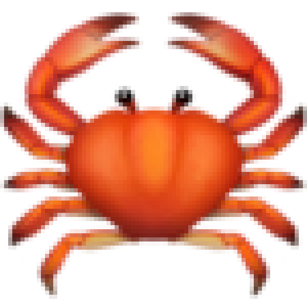

My name is Brooke Kao and I've been a researcher and designer for ten years. I strategize and advocate especially for Women of Color and marginalized identities. Because if not us, than who?
My name is Brooke Kao and I've been a researcher and designer for ten years. I strategize and advocate especially for Women of Color and marginalized identities. Because if not us, than who?
When I’m not working, I enjoy Brutalist websites. I’m a fry lover, a dog parent, a tattoo nerd, a former fashion blogger, a rock collector, a Sun in Cancer and Moon in Pisces. Let me do your chart sometime.☉
I marry quantitative and qualitative data to define the problem space for the people that make our food and tend to us in stores.
I developed a Design System, research and Agile product practice for a white label that serves thousands of enterprise-level restaurants.
I worked quickly, collaboratively and continuously to reduce the time financial advisors take to help you with your cash flow issues.